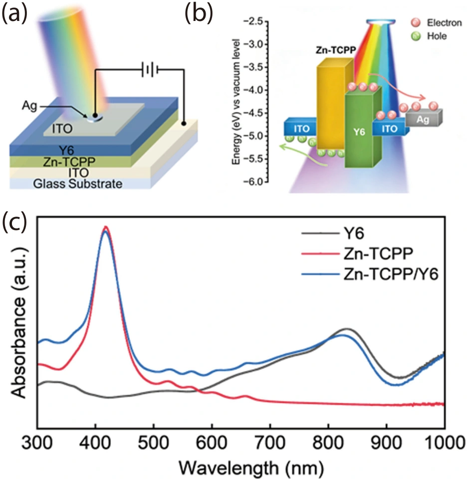
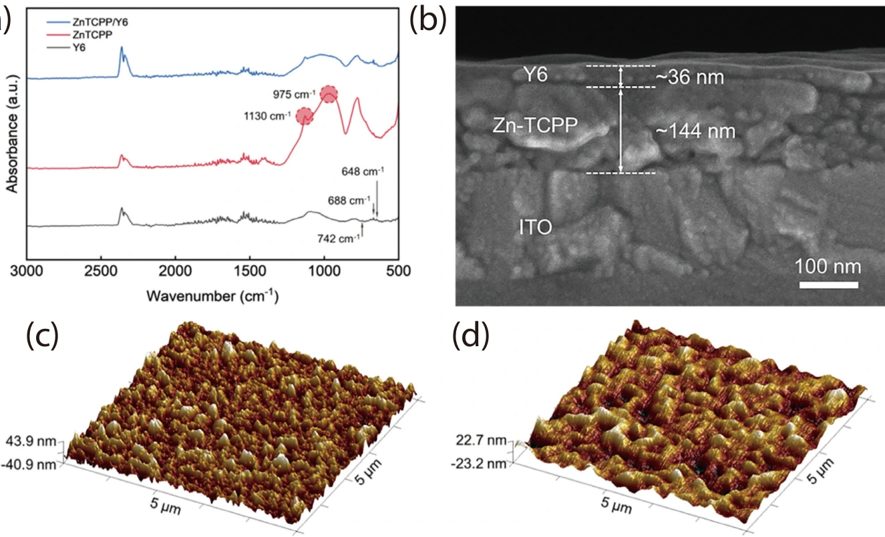
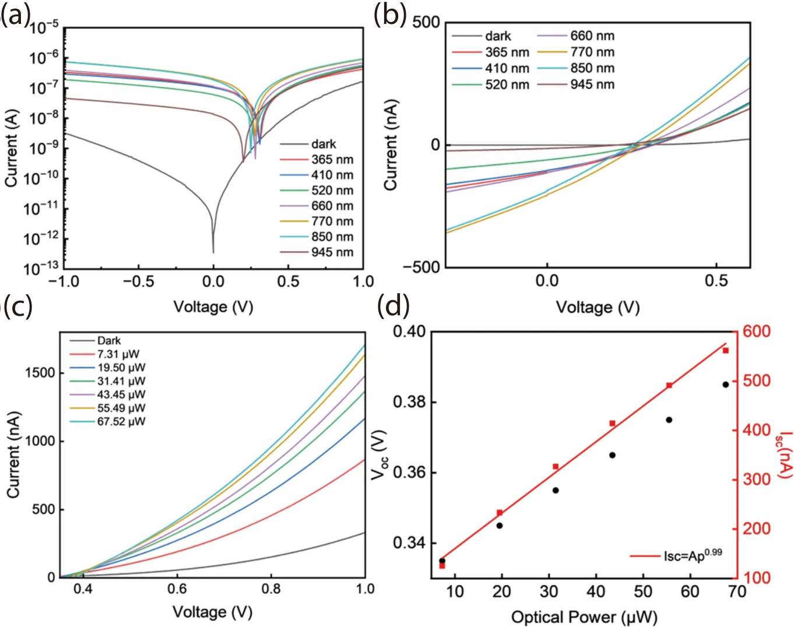
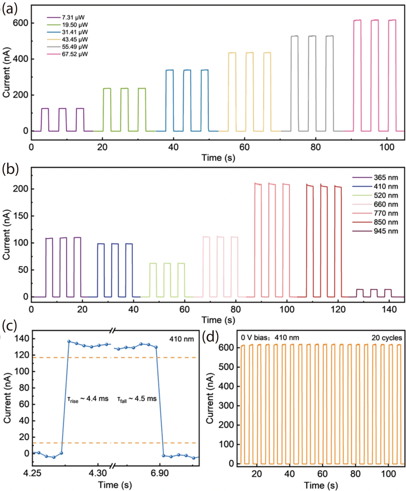
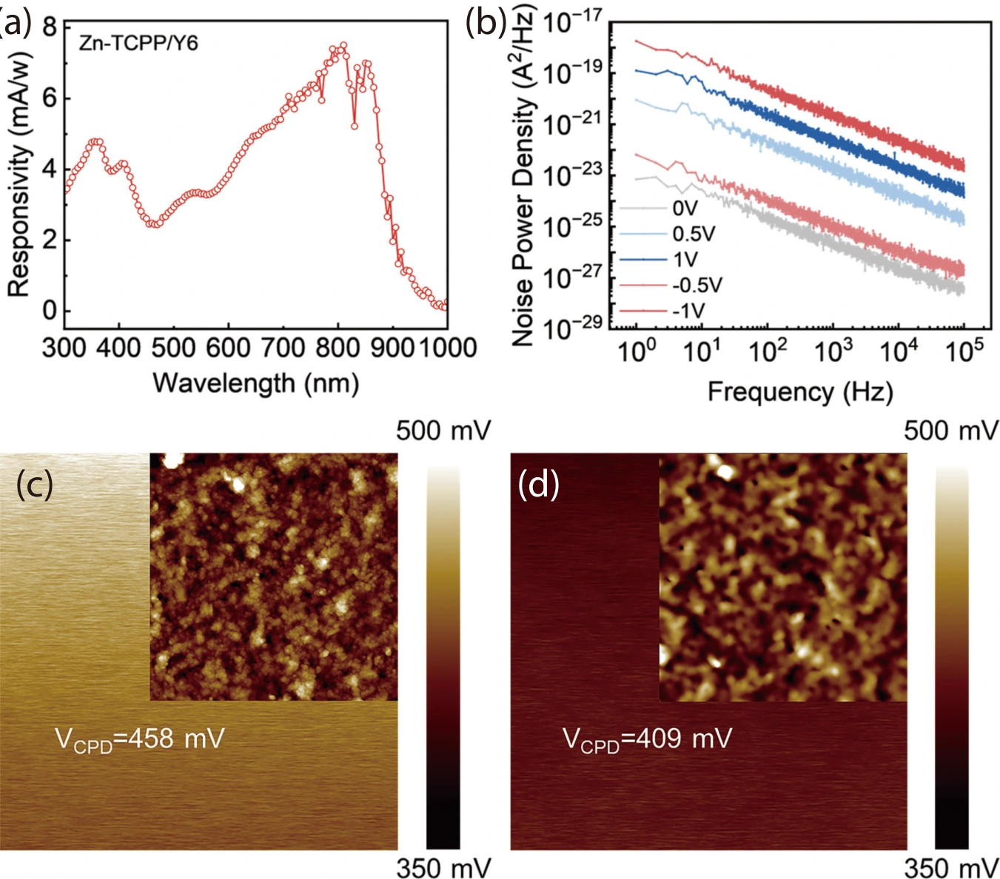

MOF/有机异质结：从宽谱吸收到自供能探测
让可见与近红外吸收相互补充
Zn-TCPP 提供较强的紫外与可见吸收，Y6 将吸收拓展至红光和近红外。器件采用 Glass / ITO / Zn-TCPP / Y6 / ITO / Ag 结构，通过 MOF 逐层生长和 Y6 旋涂形成分层异质结。两种材料形成 type-II 能级排列，有利于激子在界面解离及电子、空穴的定向输运。

用结构和形貌检验异质结质量
红外光谱、截面 SEM 和 AFM 分别提供化学结构、层厚和表面形貌证据。截面中 Zn-TCPP 与 Y6 的厚度约为 144 nm 和 36 nm；覆盖 Y6 后表面粗糙度降低，有利于形成连续接触，并减少电荷输运中的局部不均匀。

无需外加偏压，也能分离光生电荷
论文以不同波长的电流–电压曲线和光强依赖实验验证光伏响应。异质结接触后的电荷重新分布形成内建电场，使光生电荷在 0 V 条件下仍能分离和收集。离散波长测试覆盖 365–945 nm，体现材料吸收互补对宽谱响应的贡献。

快速响应与重复读出
在 410 nm 光照下，上升与下降时间分别为 4.4 ms 和 4.5 ms。重复开关实验表明光响应具有可重复性；空气中储存六个月后，光电流保持初始值的 83.6%。这些结果为宽谱探测器的持续使用提供实验依据。

吸收最强的波长，未必响应度最高
0 V 光谱响应测试显示 300–950 nm 的宽谱响应，810 nm 峰值响应度为 7.51 mA/W。作者把近红外响应优势与 Y6 中激子的扩散、界面解离和收集效率联系起来。文中 2.41 × 10¹² Jones 的比探测率基于暗电流估算；低频噪声另有实测分析。

Broadband self-powered photodetector enabled by a MOF/organic heterojunction architecture
Mingke Yu, Huiyan Zheng, Yutao Xiong, Hong Wang, Yanghui Liu, Gang Liu
Journal of Semiconductors 47 (2026), 042802